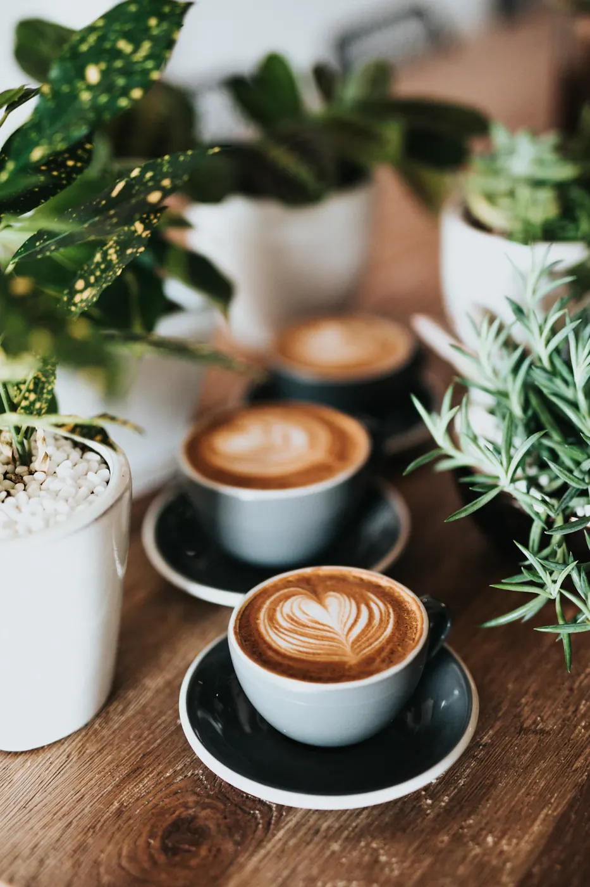
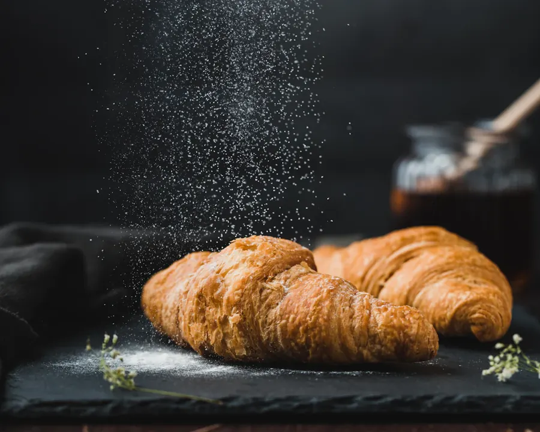
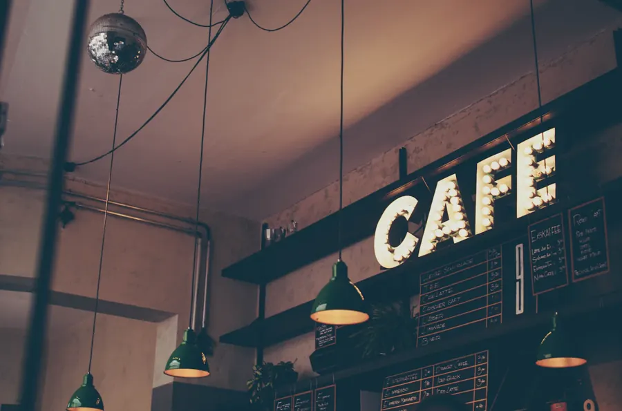

KÜÇÜK MOLALAR, GÜZEL TATLAR
Bir fincan mutluluk,
bir dilim huzur.
Kahvenin kokusu, fırından çıkan ilk kruvasan.
Günün en güzel anı, belki de küçük bir mola.
küçük mutluluklar.


Kahvenin yanına?Tereyağlı kruvasan ↗İLK YUDUMDA, İLK LOKMADA
Molanın favorileri.
TATLI BİR ARA
Günün tatlıları,
günün güzel bahanesi.
Çikolatanın yoğunluğu, meyvenin hafifliği.
Her molanın bir tatlı tarafı var.

MOKA & MİRABİZİM KÜÇÜK HİKÂYEMİZ
İyi bir mola için
büyük bir neden gerekmez.
MOKA & MİRA'nın kurgusal hikâyesi, kahveyle başlayan uzun bir sohbetten doğdu. Moka kahvenin sıcaklığını, Mira ise günlük hayatın içindeki küçük keşifleri temsil ediyor.
Bu hayali butik kafede aceleye yer yok. Bir fincanın etrafında buluşmayı, aynı tatlıyı paylaşmayı ve sıradan bir güne güzel bir ara vermeyi seviyoruz.
Bir fincan. Bir dilim. Bir an.MOLANIZI BİRLİKTE HAZIRLAYALIM
Sizin kahveniz.
Sizin küçük mutluluğunuz.
Menüden seçin, size göre kişiselleştirin,
demo sipariş deneyimini keşfedin.
Bu bir portföy demosudur. Gerçek işletme adresi,
telefon veya iletişim gönderimi içermez.